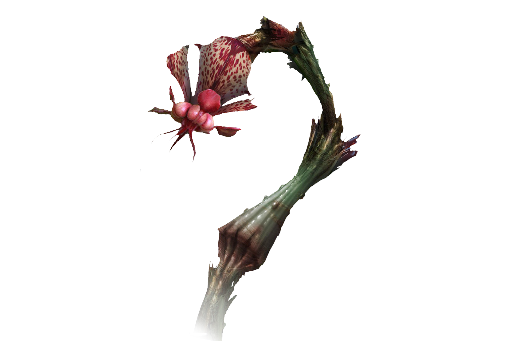
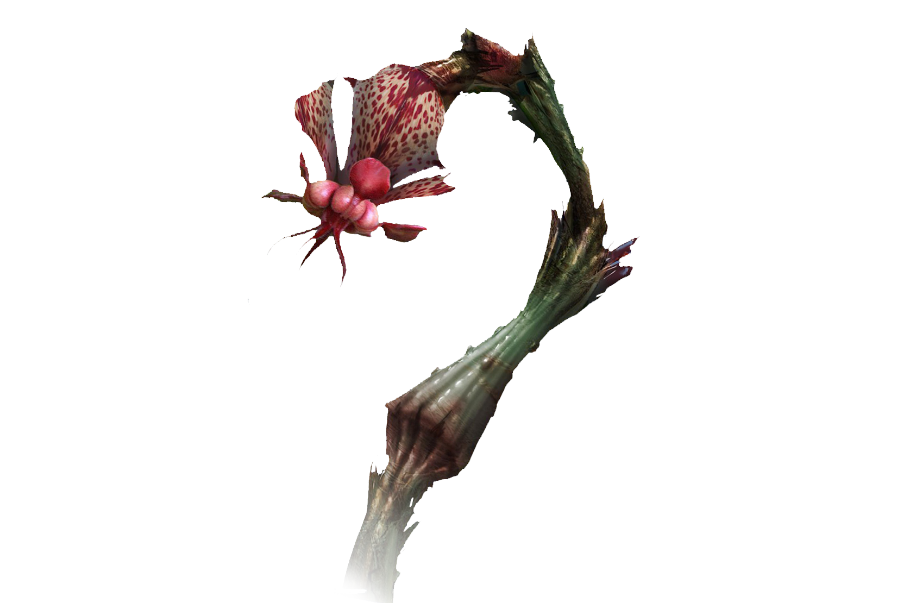

A flora de Pandora é estranha e até fantástica. Mas algumas em Pandora se parecem muito com as da Terra. A diversidade da vida vegetal e seu tamanhos e complexidade sugerem que, como na Terra, o meio ambiente de Pandora age como uma força importante para a seleção natural. Os fatores ambientais que as plantas experimentam na Terra - radiação, água, gases atmosféricos e gravidade- estão presentes em Pandora também, apesar de diferirem profundamente, como o resultado mostra.
Desenvolveram uma cultura vibrante, complexa e sofisticada baseada em uma conexão espiritual profunda com a Lua, um com o outro e com o abrangente" espírito que chamam de Eywa. A Árvore das Vozes,por exemplo (nome Na'vi: Utral Aymokriyä) foi um importante local espiritual para o clã Omaticaya, assim chamada por causa das "vozes" de antepassados que poderiam ser "ouvidas" lá através da trança neural em contato com a árvore.
 

Nome comum: Helicoradian
Nome Na'vi: Loreyu ou "linda espiral"
Taxonomia: Helicoradium spirale. A raiz significa "espiral".
Descrição Botânica: Uma zooplanta alta e herbácea com sistema nervoso parecido com o de um animal.
Uma grande folha única em formato espiral de cor laranja. Responde ao toque se enrolando e retraindo-se rapidamente em direção ao solo.
Altura:De seis a oito metros.
Extensão:As folhas podem chegar a 2,5 metros.
Etnobotânica: As folhas são usadas para fazer batas ornamentais para cerimonias. Os pigmentos laranja
em folhas são extraídos e usados para pintura.
Nome comum: Samambaia cocar-de-guerra
Nome Na'vi: Eyaye
Taxonomia: Bellicum pennatum. O nome significa "guerra" e "pena".
Descrição Botânica: Planta grande e herbácea, parecida com uma samambaia de folhas azuis. Bastante comum em Pandora.
Altura:De 4,5 a 5,5 metros.
Extensão: 1,5 metro, em média.
Etnobotânica: Usada pelos Na'vi para cerimôrias, nas construções de cocares e outros adornos.
Nome comum: Baja Tickler
Nome Na'vi: Txumtsä ou "planta que esguicha veneno"
Taxonomia: Flaska reclinata ou "frasco reclinado"
Descrição Botânica: Planta grande com um corpo em forma de frasco reclinado, preso por raízes acima do solo.
Um grupo de folhas espinhosos protege uma pequena abertura no alto. As toxinas atmosféricas são absorvidas pela planta e se dissolvem num líquido que se acumula do lado de dentro.
Altura:De 6 a 7,5 metros.
Extensão: De 9 a 12 metros.
Etnobotânica: O Baja Tckler é uma nova forma de planta que parece uma árvore oca. Possui uma importante função ao absorver, condensar e purificar toxinas atmosféricas.
Nome comum: Planta cálice
Nome Na'vi: Yomioang ou "planta que come animais"
Taxonomia: Pseudocenia rosea. Ganhou esse nome pela semelhança com a planta terráqua chamada Sarracenia e sua cor rosada.
Descrição Botânica: Planta carnívora grande e bonita em forma de cântaro de cor rosa - lavanda pálido. Contém abundante néctar que atrai pequenos animais.
Altura:De 5 a 6 metros acima do chão.
Extensão: De 1,5 a 2,5 metros.
Etnobotânica: Animais entram na planta, são presos no cântaro e só conseguem descer. A s enzimas dentro do cortpo da planta digerem os animais para se alimentar.
Função: Fonte de comida
Nome Na'vi: Utu mauti ou "fruta empurrão"
Tamanho e peso: De 10 a 13 centímetros; 2,5 a 5 centímetros de diâmetro.
Fonte: Utrai utu mauti ou "árvore da fruta do empurrão".
Nome comum: Cardo escorpião.
Nome Na'vi: Txumpaywll ou "planta de água venenosa"
Taxonomia: Scorpiaflora maxima. O nome significa "planta grande parecida com escorpião"
Descrição Botânica: Planta herbácea grande com uma únca flor gigante e colorida na ponta.
Ecologia: Flores do cardo escorpião são polinizadas por grandes pássaros. As floras exalam um líquido ácido que limpa o solo abaixo da planta e promove a germinação das sementes, uma forma de "criação da planta"
Etnobotânica: A seiva da planta é coletada pelos Na'vi e usada para fazer remédios e dardos de caça envenenados que machucam sem matar a presa.